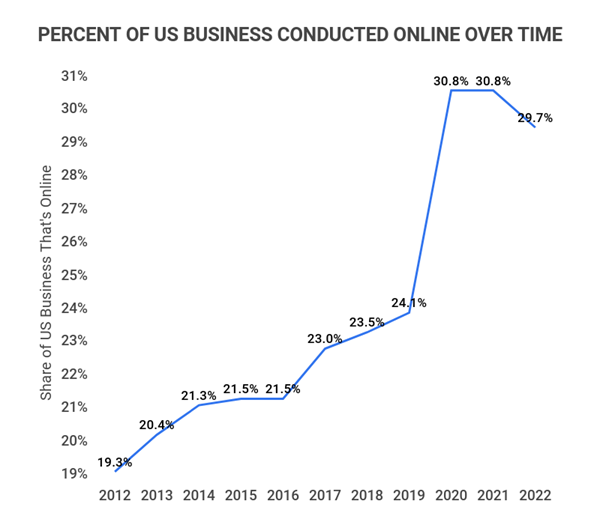

Pros
- Low startup and operating costs
- Global reach
- Flexibility and convenience
- High competition
- Dependence on tech
- Shipping complications
Running an online business comes with a number of clear benefits, but also some real challenges. One of the biggest advantages is the low startup and operating costs. Unlike traditional businesses, there’s no need to rent a physical space, hire a large team, or invest heavily in storefront setups. This makes it easier and more affordable to get started. Another major benefit is the global reach with the internet, you’re not limited to local customers. You can sell products or services to people across the country or even around the world, opening up much larger markets. Online businesses also offer flexibility and convenience, allowing you to work from anywhere and often set your own hours. This can make it easier to balance work with personal life, and manage operations without being tied to a specific location. However, there are also downsides to consider. High competition is a major one because the barrier to entry is low, many people are starting online businesses, which means it can be hard to stand out. You’ll likely need strong branding, smart marketing, and a clear value proposition just to get noticed. Another challenge is the dependence on technology. Your business relies heavily on your website, software, and online tools. If your site goes down, loads slowly, or has security issues, it can directly impact your sales and reputation. Finally, shipping complications can become a big issue, especially if you’re selling physical products. Delays, lost packages, damaged items, or high shipping costs can lead to unhappy customers and reduced profits. Overall, while online businesses offer great potential, they also require careful planning and ongoing effort to handle the risks effectively.

Recession resilience
Online businesses can be more resilient during a recession, but that doesn’t mean they’re recession proof. Many have an edge because of lower overhead costs and the ability to quickly adapt changing prices, shifting products, or reaching wider audiences online. Consumers also tend to look for better deals during tough times, and shopping online often helps them do that. So, e commerce that focuses on essentials or affordable options can do fairly well. That's said not all online businesses hold up. If you're selling luxury items or non essential products, demand can drop fast. Plus, supply chain issues or rising ad costs can still hit hard. In short, online businesses can weather a recession better than some traditional ones, but success depends on what you're selling and how flexible you are.

The amount of business work done online
How to start or buy an online business
Starting or buying an online business isn’t as complicated as it might seem, but it does take planning and some upfront work. If you’re starting from scratch, the first step is deciding what you want to sell whether it's a product, service, or digital content. You’ll need to research the market, find your niche, and make sure there’s real demand. From there, you can build a website, set up payment systems, and start marketing through social media, email, or ads. It’s a slower path but gives you full control and flexibility. On the other hand, buying an existing online business lets you skip the setup phase. You’re taking over something that already has customers, systems, and revenue. Sites like Trade me or Bizbuysell list online businesses for sale, but you’ll need to do your homework check the numbers, understand how it makes money, and make sure it's something you can actually run. Either way, success comes down to knowing what you're getting into and being ready to put in the work.